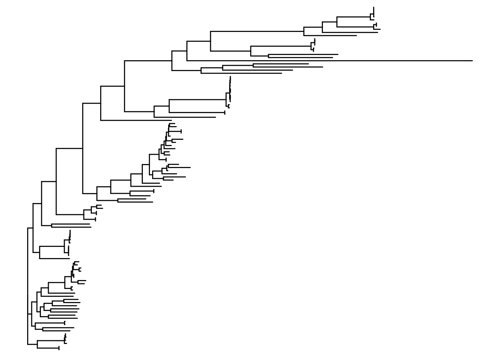
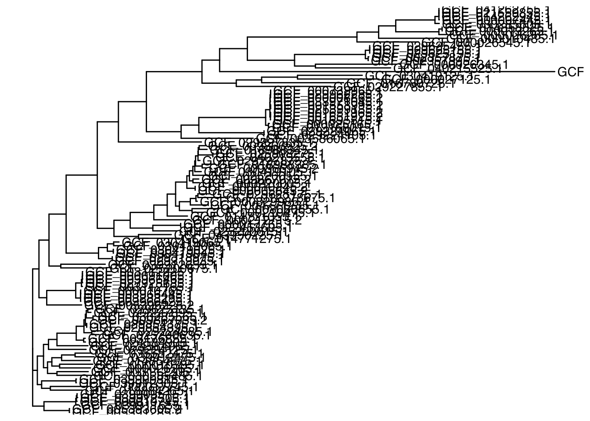
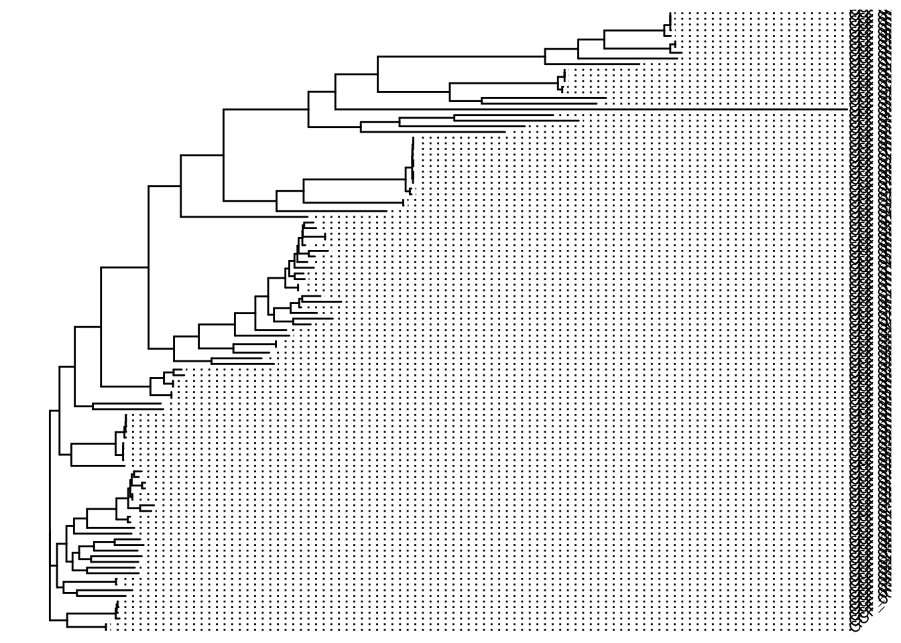
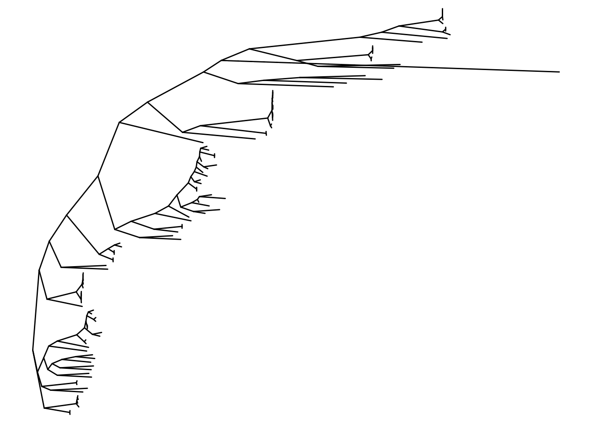
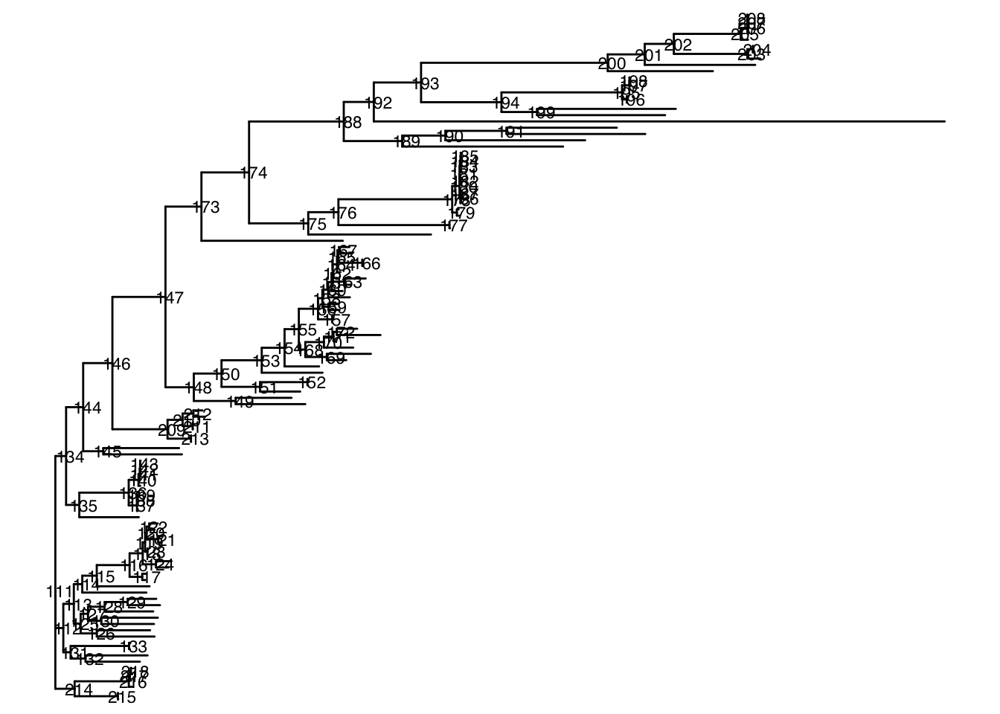
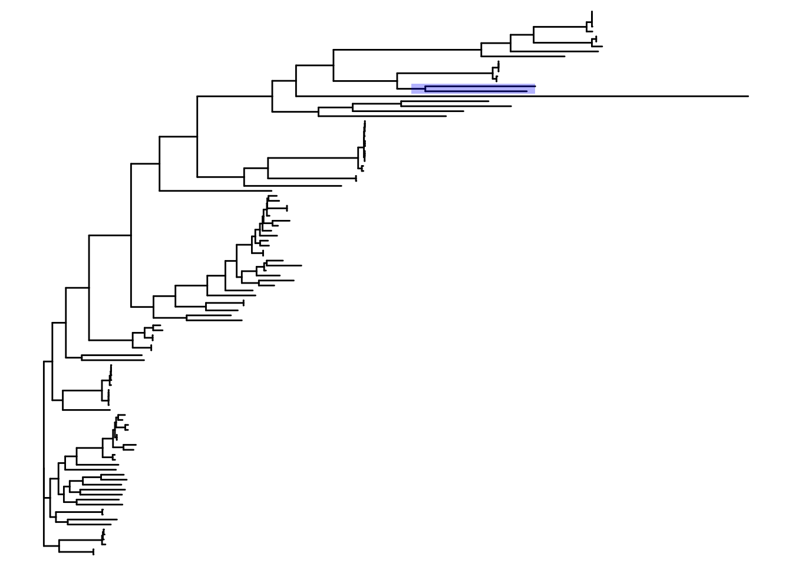
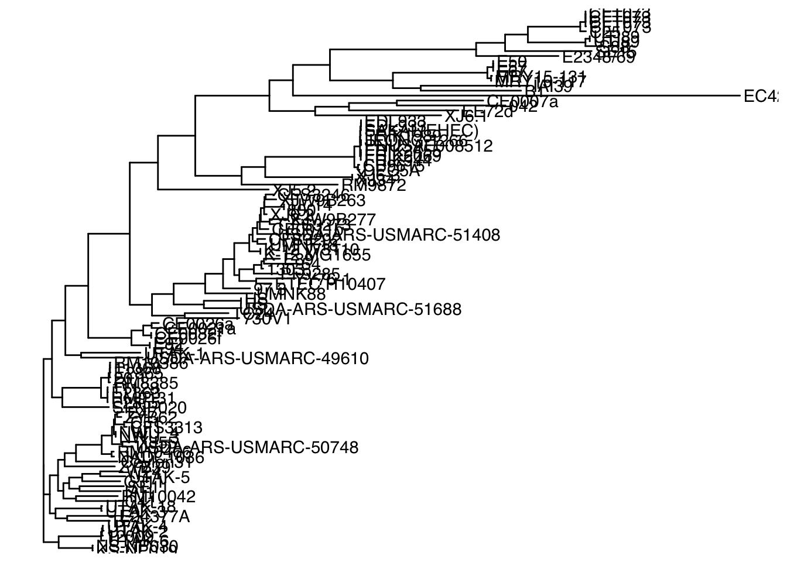
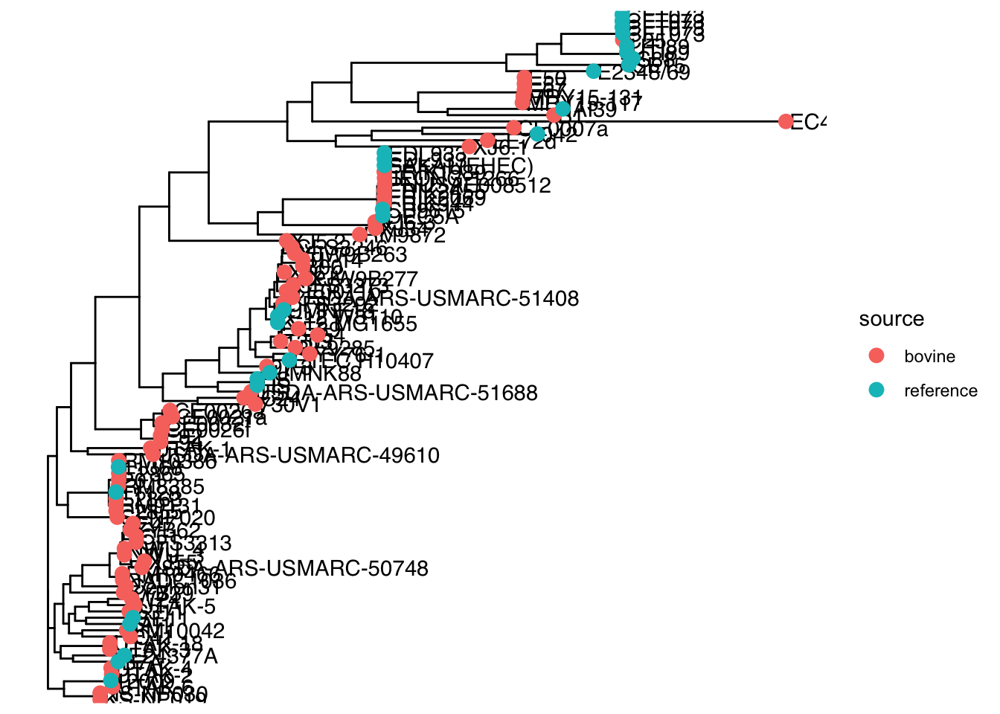

Chapter 3 Main ggtree functions
The ggtree package in R is a powerful tool for visualizing and annotating phylogenetic trees. It is built on top of the ggplot2 package and allows for highly customizable and publication-ready tree visualizations.
3.1 Prerequisites
To follow this tutorial, ensure you have the following R packages installed:
install.packages("tidyverse")
if (!requireNamespace("BiocManager", quietly = TRUE)) {
install.packages("BiocManager")
}
BiocManager::install("ggtree")
BiocManager::install("treeio")Load the neccesary packages
3.2 Loading a Phylogenetic Tree
ggtree supports various formats of phylogenetic trees. The most common is the Newick format and therefore we will use a *.nwk tree for demonstration.
All of the following functions can create a phylo object from a newick file
ape::read.tree("example_phylo.nwk") %>% class
phyloseq::read_tree("example_phylo.nwk") %>% class
phytools::read.newick("example_phylo.nwk") %>% class
treeio::read.newick("example_phylo.nwk") %>% class# Load tree from a Newick file as a phylo object (read.nwwick from treeio)
tree <- read.newick("data/example_2_phylo.nwk")
# Print tree structure
print(tree)##
## Phylogenetic tree with 110 tips and 108 internal nodes.
##
## Tip labels:
## GCF_029224125.1, GCF_024584905.1, GCF_003176855.1, GCF_009867035.2, GCF_030285565.1, GCF_029227895.1, ...
## Node labels:
## , 0.981998, 0.987349, 0.946895, 0.994059, 1.000000, ...
##
## Unrooted; includes branch length(s).3.3 Basic Tree Visualization
Visualizing the tree is straightforward

Adding Tip Labels
You can add labels to the tips of the tree using geom_tiplab:

Parameters for geom_tiplab:
- size: Adjusts the size of the labels.
- align: Aligns labels horizontally.
- angle: Rotates labels (useful for circular trees).

3.4 Tree Layouts
ggtree supports various layouts for trees, such as:
- rectangular (default)
- circular
- fan
- slanted
- radial
Circular layout
Slanted layout

3.5 Annotating Trees
Adding Node Labels
To annotate nodes, use geom_nodelab:

Highlighting Clades
Highlight specific clades with geom_hilight:

Parameters for geom_hilight
- node: Specify the node ID to highlight.
- fill: The fill color for the highlight.
- alpha: Transparency of the highlight.
Annotating Specific Tips
3.6 Adding Metadata
Metadata can be merged into the tree object and displayed, metadata is a data.frame:
# Charge metadata and keep relevant columns
metadata <- readr::read_tsv("data/Experiment_Design_example_2.tsv")
metadata<-metadata %>% select(Assembly.Accession,Strain,Phylogroup,Patotype,Geographic.location,source)
print(head(metadata))## # A tibble: 6 × 6
## Assembly.Accession Strain Phylogroup Patotype Geographic.location source
## <chr> <chr> <chr> <chr> <chr> <chr>
## 1 GCF_000007445.1 CFT073 B2 UPEC <NA> reference
## 2 GCF_000010385.1 SE11 B1 Comensal <NA> reference
## 3 GCF_000010485.1 SE15 B2 Comensal <NA> reference
## 4 GCF_000010745.1 12009 B1 EHEC <NA> reference
## 5 GCF_000010765.1 11128 B1 EHEC <NA> reference
## 6 GCF_000013265.1 UTI89 B2 UPEC <NA> reference## # A tibble: 6 × 6
## Assembly.Accession Strain Phylogroup Patotype Geographic.location source
## <chr> <chr> <chr> <chr> <chr> <chr>
## 1 GCF_039912475.1 UTAK-5 <NA> <NA> USA bovine
## 2 GCF_039912505.1 UTAK-2 <NA> <NA> USA bovine
## 3 GCF_039912655.1 UTAK-1 <NA> <NA> USA bovine
## 4 GCF_040215525.1 B1 <NA> <NA> China:Tongliao bovine
## 5 GCF_040215555.1 800 <NA> <NA> China:TongLiao bovine
## 6 GCF_043950225.1 TC24 <NA> <NA> Guadeloupe bovinemetadata <- metadata %>% rename(label = Assembly.Accession)
# Metadata rows have to be in the same order as the tree
tree<-read.tree("data/example_2_phylo.nwk")
metadata <- metadata %>%
filter(Assembly.Accession %in% tree$tip.label) %>%
arrange(match(Assembly.Accession, tree$tip.label))You can rename the taxa in the tree object
# Rename the taxa in the tree object
tree2 <- rename_taxa(tree, metadata, Assembly.Accession, Strain)
p<-ggtree(tree2)+geom_tiplab()
print(p)
Or even better, attach metadata to ggtree object …
… and use any metadata column as labels

You could also change tip labels by
Color elements using metadataa
# Plot tree with metadata
p <- ggtree(tree) %<+% metadata +
geom_tiplab(aes(label=Strain))+
geom_tippoint(aes(color = source), size = 3)
print(p)
Note: There is a metadata fusion alternative with full_join, check in the code treeio.R
3.7 Creating Heatmaps
#Use gheatmap to add heatmaps to the tree: #THIS CODE IS CURRENTLY FAILING!!
# Example matrix
set.seed(123)
matrix_data <- data.frame(Patotype = metadata$Patotype,
Geography=metadata$Geographic.location)
rownames(matrix_data) <-metadata$Assembly.Accession
# Add heatmap
gheatmap(p, matrix_data, width=0.05, colnames=FALSE, legend_title="Patotype" ) +
theme(text = element_text(size = 20))Session Info